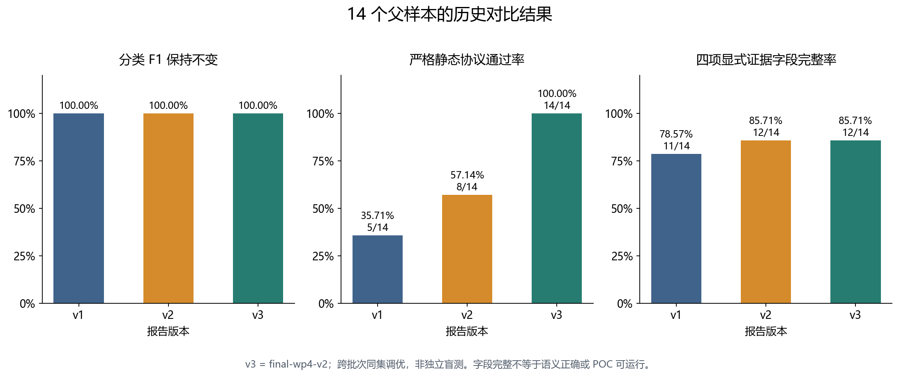
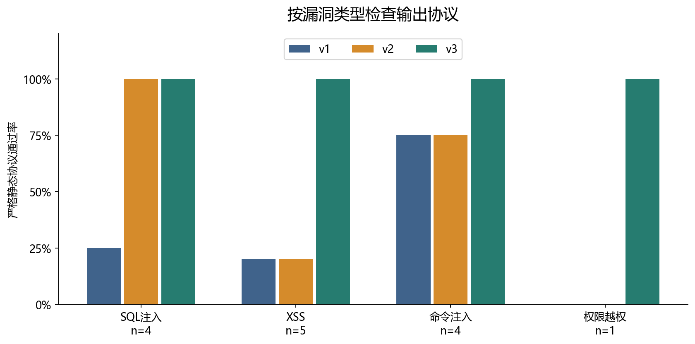
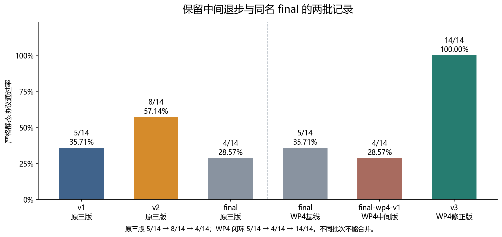
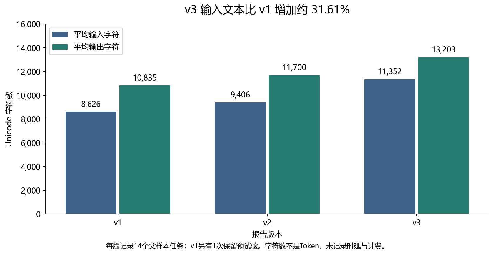

选做1 多版本 Prompt 挖掘效果对比报告
本实验比较同一组14个父样本在三个 Prompt 版本下的漏洞分类、证据完整性、输出协议与文本成本。三版与项目已有主条件标签均完全一致，分类精确率、召回率和 F1 没有提高；严格静态协议通过率由 v1 的35.71%上升至 v3 的100.00%，四项显式证据字段完整率由78.57%上升至85.71%。补测40份原稿后，POC可运行率为 v1 13/14（92.86%）、v2 11/13（84.62%）、v3 13/13（100.00%）。这些结果支持已知样本上的输出约束改善和 v3 的原稿可运行性提升，但仍受同集调优与样本量限制，不能外推为泛化能力。
交付状态：历史证据分析、可复现材料与40份原稿补测已完成。 历史时延、Token及具体采样参数无法追溯；原始标签的预先冻结时间与人工独立复核仍不足。因此成本项保持“未记录”，POC结果只代表本机固定靶场、原稿未改代码的执行情况。
1 项目基线与版本选择
基线为用户提供的完整项目 ZIP，与 GitHub main 提交 533b87dd1225d6bd11cb8bdc98b0f2f91eb69617 的706个文件逐一核对一致。归档 SHA-256 为 5de86d0de9be93aed2308d557d5322a8960bde423fa82d6af5f7ec63e549f200。历史模型记录日期为2026年10月19日；本次离线复算日期为2026年10月20日。本次没有重新调用模型，也没有把旧会话草案视为新实验。
| 报告代号 |
实际 Prompt 版本 |
历史批次 |
版本作用 |
| v1 |
v1 |
wp2-eval-42 |
通用基线，已有统一输出协议 |
| v2 |
v2 |
wp2-eval-42 |
加强逐字证据、成立条件与漏洞专属规则 |
| v3 |
final-wp4-v2 |
wp4-final-wp4-v2 |
纳入主体 POC 反馈，补齐可观测性、严格类型与排除证据约束 |
v3 是报告代号，源文件与输出里的版本名保持 final-wp4-v2。原三版中的 final 尚未纳入后续工作包4反馈，不直接改名为 v3。为避免只展示最优版本，补充保留原 final、工作包4的 final 基线和 final-wp4-v1 中间版；合计复算84份历史响应，其中主比较42份。
完整 Prompt 汇编见 v1、v2、v3，逐包原件见 raw_inputs/。逐字节来源和哈希见 输入清单 与 来源核对。
2 实验条件与计数口径
样本为工作包1输入 v2，含14个父样本、17份输入包。逐包提取审计数据区并计算 SHA-256，六个比较组的17个数据区全部一致。SQLI-005与AUTH-001的多包只汇总为一个父样本，不重复计数。
真实标签取 results/batches/wp4-poc-01/ground_truth.csv 的14条 main_condition=yes 记录，共12个阳性、2个阴性。17条条件验证全部保留供追溯，但AUTH-001的四个配置不能算成四个独立父样本。父样本主标签为low条件下存在漏洞，不代表impossible配置也存在漏洞。
历史模型名称均记为 DeepSeek Harness subagent（deepseek-flash），每条结果在独立子代理上下文生成，多包一次性提供。具体服务端快照、温度、最大输出长度、工具权限与内部调用次数无法核验；不同版本来自历史批次，不能声称严格随机受控或完全同参。任务不要求商业API，关键限制是实际参数与过程记录缺失。
预测“存在候选”记阳性，“未检出候选”记阴性，“无法判定”记U并报告覆盖率。精确率=TP/(TP+FP)，召回率=TP/(TP+FN)，F1=2TP/(2TP+FP+FN)。分母为零记不适用，未知实测结果记待测。
证据完整率采用保守、可复算的字段口径：一份父样本响应的所有候选均具有非空位置、数据流、前置条件，且响应含有效结论状态，才计完整。两个阴性响应采用排除证据结构，没有显式 data_flow 与 preconditions 字段，计为字段不齐；这不表示其排除判断错误。字段齐全不等于数据流语义或行号正确，后者需另行核验。
3 整体结果
| 指标 |
v1 |
v2 |
v3 |
| 精确率 |
100.00%（12/12） |
100.00%（12/12） |
100.00%（12/12） |
| 召回率 |
100.00%（12/12） |
100.00%（12/12） |
100.00%（12/12） |
| F1 |
100.00%（24/24） |
100.00%（24/24） |
100.00%（24/24） |
| 严格静态协议 |
35.71%（5/14） |
57.14%（8/14） |
100.00%（14/14） |
| 四项证据字段完整率 |
78.57%（11/14） |
85.71%（12/14） |
85.71%（12/14） |
| Python 语法通过率 |
100.00%（14/14） |
100.00%（13/13） |
100.00%（13/13） |
| POC 原稿可运行率 |
92.86%（13/14） |
84.62%（11/13） |
100.00%（13/13） |
每版 TP=12、FP=0、FN=0、TN=2、U=0。TP样本为AUTH-001、CMD-001/002/003、SQLI-001/002/003/005、XSS-001/002/003/005；TN为CMD-004与XSS-004。FP/FN集合为空，不能虚构代表性误报漏报。逐条判断见 标注表。

v1到v2的严格协议通过率增加21.43个百分点；v2到v3增加42.86个百分点；v1到v3增加64.29个百分点，相对增加180.00%。证据字段完整率提高7.14个百分点，相对增加9.09%。精确率、召回率与F1变化均为0个百分点。差值使用原始分数计算后四舍五入，不用显示值相减。
v1的AUTH-001有一个finding缺少 data_flow 字段，没有满足统一证据字段要求，因此v1阳性证据字段完整为11/12；v2与v3为12/12。阴性的字段结构差异使整体比例分别为11/14、12/14、12/14。
分漏洞类型结果
| 类型 |
版本 |
n |
TP |
FP |
FN |
TN |
F1 |
严格协议 |
| SQL注入 |
v1 |
4 |
4 |
0 |
0 |
0 |
100.00% |
25.00% |
| SQL注入 |
v2 |
4 |
4 |
0 |
0 |
0 |
100.00% |
100.00% |
| SQL注入 |
v3 |
4 |
4 |
0 |
0 |
0 |
100.00% |
100.00% |
| XSS |
v1 |
5 |
4 |
0 |
0 |
1 |
100.00% |
20.00% |
| XSS |
v2 |
5 |
4 |
0 |
0 |
1 |
100.00% |
20.00% |
| XSS |
v3 |
5 |
4 |
0 |
0 |
1 |
100.00% |
100.00% |
| 命令注入 |
v1 |
4 |
3 |
0 |
0 |
1 |
100.00% |
75.00% |
| 命令注入 |
v2 |
4 |
3 |
0 |
0 |
1 |
100.00% |
75.00% |
| 命令注入 |
v3 |
4 |
3 |
0 |
0 |
1 |
100.00% |
100.00% |
| 权限越权 |
v1 |
1 |
1 |
0 |
0 |
0 |
100.00% |
0.00% |
| 权限越权 |
v2 |
1 |
1 |
0 |
0 |
0 |
100.00% |
0.00% |
| 权限越权 |
v3 |
1 |
1 |
0 |
0 |
0 |
100.00% |
100.00% |

SQL注入与权限类没有阴性样本，不能据此评估这些类型的误报率；权限类仅一个父样本，结论非常有限。总体仅两个阴性，不能把0/2外推为实际误报率为零。
4 中间版本与错误分析

原三版 v1/v2/final 严格协议分别为5/14、8/14、4/14；工作包4闭环 final/final-wp4-v1/final-wp4-v2 分别为5/14、4/14、14/14。两批同名final是不同历史输出，必须分开。提示词更长并未带来单调改善，中间版本的退步也应报告。
常见失败为 vulnerability_type 使用带括号的子类型、limitations 或 success_criteria 类型不符合协议，以及个别行号问题。这些是输出可消费性问题，不应计作漏洞分类FP/FN。详细逐条错误见 协议失败记录。
CR-008明确类型值和字段类型后，v3在原检查器上14/14通过。但它还对CMD-004提出负例专属条数要求，透露了该样本的角色，属于同集调优或标签线索泄露。加上已有输出被用于设计修正版，v3结果不能称为独立盲测成绩，也不能把全部差值归因于某一条约束。
工作包4原有POC契约评分40/47→45/47是关键词与文本长度启发式，既不等于本报告的四项字段完整率，也不等于POC实测成功率；本报告不把该评分作为可运行性指标。
5 POC 可运行性与成本
主比较从原始响应按finding抽取40份POC代码：v1为14份，v2和v3各13份。AUTH-001包含多个候选，所以POC数与父样本数不同。代码及哈希见 pocs/ 和 执行台账。2026-10-20 在 WSL2 Ubuntu 22.04 的固定靶场（DVWA 068d974、SQLi-Labs e96f217、MariaDB 10.6、PHP 8.1/5.6）中，40份原稿全部实际执行；没有修改源码，只通过既有CLI参数提供本地URL、端口、会话Cookie、专用账号名与路径。环境与安装修复见 补测环境。
成功判据不是脚本退出码或HTTP 200：SQL注入需真/假条件的业务结果差异；命令注入需marker出现在命令输出区且控制请求无marker；AUTH需越权读取/写入并有独立回读与恢复；XSS需headless Chrome实际执行并捕获alert/console标记。逐条命令、输出、耗时、证据与恢复见 补测结果 和 followup/evidence/。
| 版本 |
生成 |
已测 |
成功 |
失败 |
原稿可运行率 |
| v1 |
14 |
14 |
13 |
1 |
92.86% |
| v2 |
13 |
13 |
11 |
2 |
84.62% |
| v3 |
13 |
13 |
13 |
0 |
100.00% |
| 合计 |
40 |
40 |
37 |
3 |
92.50% |
三例失败均由原稿自身逻辑或运行错误导致，而非环境不可用：
- v1 SQLI-003：布尔假分支使用
1'||'1'='2，由于id='1'先为真，整条表达式仍为真，三个请求都命中同一行；只有单引号触发语法错误，没有真假业务差分。
- v2 SQLI-003：
1' UNION SELECT 1,2,3-- -先返回id=1的原有行，LIMIT 0,1截断了marker行；脚本只检查静态文案，未形成可判定的差分。
- v2 XSS-005：模块内函数
http()覆盖了导入的http包，运行到http.cookiejar.CookieJar()即抛AttributeError/NameError，请求尚未发出。
两个CMD-002原稿（v2/v3）自身返回失败，但失败原因在观察逻辑而非利用失败：v2要求响应同时出现ping输出，而127.0.0.1|echo MARKER的管道输出只有marker；v3把同名marker当作主机名做反射控制，ping解析并回显了该串，污染了控制组。独立对照（基线<pre>只有ping输出；127.0.0.1|echo CMD002_CTRL_UNIQUE的<pre>恰为marker）确认是命令执行，原始对照见followup/raw/cmd002_control.json，因此按实际执行证据计成功，并在证据文件中保留脚本判据缺陷。若采用“仅脚本自身报告成功”的更严口径，v2为10/13、v3为12/13；本报告采用任务书的“POC是否实际触发漏洞”口径。
v1/v2的XSS脚本只做HTTP反射观察，本报告没有把“响应含payload”当成功，而是另用headless Chrome加载同一URL、捕获对话框或控制台标记后才计成功。补测覆盖率为40/40，不再保留“待测”字段。
| 成本记录 |
v1 |
v2 |
v3 |
| 父样本生成任务记录 |
14 |
14 |
14 |
| 已保留额外预试验 |
1 |
0 |
0 |
| 输入包数 |
17 |
17 |
17 |
| 平均输入字符数 |
8,625.57 |
9,405.86 |
11,352.36 |
| 平均输出字符数 |
10,834.79 |
11,699.50 |
13,203.36 |
| 时延、Token、API内部调用数 |
未记录 |
未记录 |
未记录 |

v3输入文本平均比v1增加约31.61%，说明新增约束增加了上下文负担；字符数不能换算成真实Token、费用或时延。历史文件时间戳不是模型生成耗时。14是记录到的任务数，不等于底层API请求数。
6 结论与验收边界
在这14个公开教学父样本的既定主条件下，三版分类结论与已有实测标签一致，未观察到分类精确率、召回率或F1提升。可量化变化集中在输出协议与显式证据字段：严格协议通过率从35.71%上升到100.00%，证据字段完整率从78.57%上升到85.71%，平均输入字符数增加约31.61%。中间版本存在格式退步，最终修正版也含样本特定提示，因此不能表述为全面或泛化提升。
补测显示POC原稿可运行率为v1 13/14、v2 11/13、v3 13/13，v3在该批样本上最高。差异主要来自原稿自身的布尔条件构造、UNION行序处理和运行错误，而不是靶场不可用；因此它支持“v3输出更可执行”的有限结论，但不能证明对其他样本或真实系统同样有效。v3仍是在同一14个样本上调优，且对CMD-004含负例线索，不能称为独立盲测。历史时延、Token与完整采样参数无法补造；人工独立复核仍需课程成员完成。方法与逐条证据见 补测交接、补测结果 与 环境实录。
验收逐项对应见 要求对照。单命令复算见 复现手册。文件与数据完整性检查成功并不等于整项实验完全验收。
7 完成标志
“完成”分两层：可交付完成与严格验收完成。这样写是为了避免把“材料交付了”说成“所有验收项都通过了”。
7.1 可交付完成（当前已达到）
| # |
完成标志 |
当前结果 |
证据 |
| 1 |
三版 Prompt 全文、版本映射、输入清单可追溯 |
v1/v2/v3 与历史批次一一对应，14 个父样本、17 个输入包 |
prompts/、input_manifest.csv |
| 2 |
同批样本与审计数据区一致 |
17 个数据区哈希全部一致 |
source_hash_audit.csv、checks/rebuild_checks.json |
| 3 |
分类指标可复算 |
三版均为 TP=12、FP=0、FN=0、TN=2，P/R/F1=100% |
metrics.csv、labeled_results.csv |
| 4 |
40 份 POC 原稿全部实测 |
40/40 执行，37 成功（v1 13/14、v2 11/13、v3 13/13） |
followup_poc_results.csv、followup/evidence/ |
| 5 |
失败可解释，不用适配稿冒充实测 |
3 项均为 script_logic，逐条记录原因与原始输出 |
followup/evidence/、本报告第 5 节 |
| 6 |
报告、图表、复现、环境、清理齐全 |
均已更新并交叉链接 |
report.md/report.html、runbook.md、followup/ |
判定：以上 6 条全部满足，本包可作为选做1的交付版本。
7.2 严格验收完成（尚未全部达到）
| # |
完成标志 |
状态 |
说明 |
| 7 |
历史时延、Token、完整采样参数可追溯；或新批次保存完整用量 |
未达到 |
原始记录不存在，不能补造；要这些数字只能另开固定参数批次 |
| 8 |
课程成员完成人工独立盲评/复核并签字 |
未达到 |
自动执行与证据整理不能替代人工复核 |
| 9 |
若课程要求 100% POC 成功：失败原稿修复后重测 |
未达到（取决于要求） |
当前 37/40；3 例失败是原稿自身逻辑，不应静默改写后冒充原稿成功 |
判定：第 7、8 项未满足，因此不能写“所有验收项已通过”；第 9 项取决于课程是否把“全成功”作为硬性通过线。
7.3 一句话完成判定
- 验收标准是“交得出报告、指标、40 份实测与逐条证据”：已完成。
- 验收标准是“任务书逐项签字，包含历史成本与人工盲评”：尚未完成，缺第 7、8 项外部条件；第 9 项按课程口径决定。